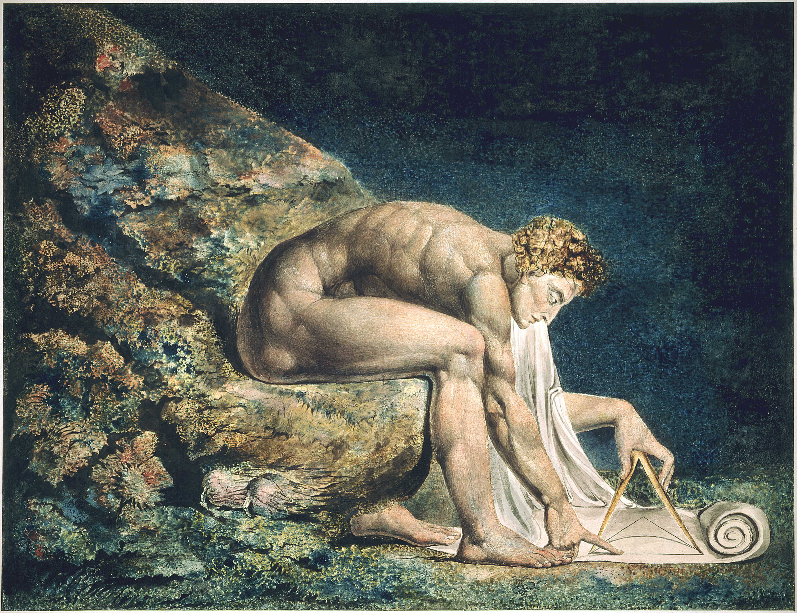
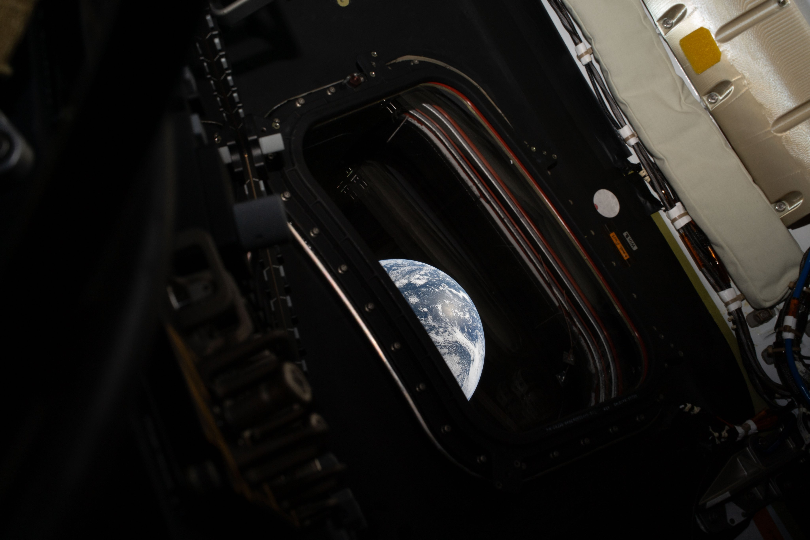
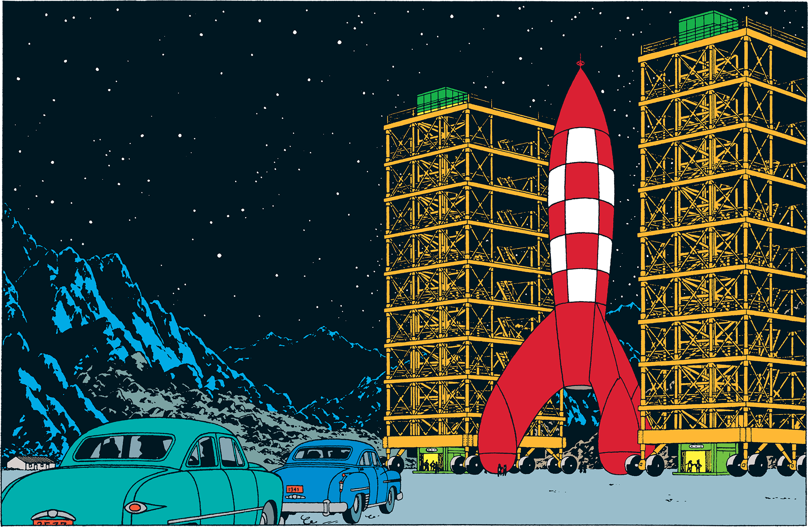

Isaac
Melbourne🇦🇺
Now
Local Time:
—
About
Hello, I'm Isaac.
- I sometimes tweet: @urbrainonsugar
- I would like to make videos on Youtube @Lemniscater
Portfolio
transferfil.es: Smooth and private WIFI file share.
bioenergetic.live: 24/7 Live loop of all interviews and conversation with Ray Peat.
fourpots.com: Health tracking tech.
Articles - IN PROGRESS
Posts
Images




